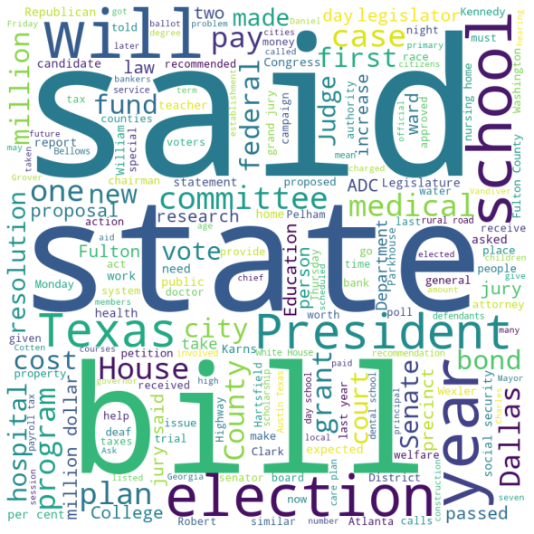

# something about nltk's corpora, what they do, what they can be used for etc.
from nltk.corpus import brown
print(brown.fileids())
['ca01', 'ca02', 'ca03', 'ca04', 'ca05', 'ca06', 'ca07', 'ca08', 'ca09', 'ca10', 'ca11', 'ca12', 'ca13', 'ca14', 'ca15', 'ca16', 'ca17', 'ca18', 'ca19', 'ca20', 'ca21', 'ca22', 'ca23', 'ca24', 'ca25', 'ca26', 'ca27', 'ca28', 'ca29', 'ca30', 'ca31', 'ca32', 'ca33', 'ca34', 'ca35', 'ca36', 'ca37', 'ca38', 'ca39', 'ca40', 'ca41', 'ca42', 'ca43', 'ca44', 'cb01', 'cb02', 'cb03', 'cb04', 'cb05', 'cb06', 'cb07', 'cb08', 'cb09', 'cb10', 'cb11', 'cb12', 'cb13', 'cb14', 'cb15', 'cb16', 'cb17', 'cb18', 'cb19', 'cb20', 'cb21', 'cb22', 'cb23', 'cb24', 'cb25', 'cb26', 'cb27', 'cc01', 'cc02', 'cc03', 'cc04', 'cc05', 'cc06', 'cc07', 'cc08', 'cc09', 'cc10', 'cc11', 'cc12', 'cc13', 'cc14', 'cc15', 'cc16', 'cc17', 'cd01', 'cd02', 'cd03', 'cd04', 'cd05', 'cd06', 'cd07', 'cd08', 'cd09', 'cd10', 'cd11', 'cd12', 'cd13', 'cd14', 'cd15', 'cd16', 'cd17', 'ce01', 'ce02', 'ce03', 'ce04', 'ce05', 'ce06', 'ce07', 'ce08', 'ce09', 'ce10', 'ce11', 'ce12', 'ce13', 'ce14', 'ce15', 'ce16', 'ce17', 'ce18', 'ce19', 'ce20', 'ce21', 'ce22', 'ce23', 'ce24', 'ce25', 'ce26', 'ce27', 'ce28', 'ce29', 'ce30', 'ce31', 'ce32', 'ce33', 'ce34', 'ce35', 'ce36', 'cf01', 'cf02', 'cf03', 'cf04', 'cf05', 'cf06', 'cf07', 'cf08', 'cf09', 'cf10', 'cf11', 'cf12', 'cf13', 'cf14', 'cf15', 'cf16', 'cf17', 'cf18', 'cf19', 'cf20', 'cf21', 'cf22', 'cf23', 'cf24', 'cf25', 'cf26', 'cf27', 'cf28', 'cf29', 'cf30', 'cf31', 'cf32', 'cf33', 'cf34', 'cf35', 'cf36', 'cf37', 'cf38', 'cf39', 'cf40', 'cf41', 'cf42', 'cf43', 'cf44', 'cf45', 'cf46', 'cf47', 'cf48', 'cg01', 'cg02', 'cg03', 'cg04', 'cg05', 'cg06', 'cg07', 'cg08', 'cg09', 'cg10', 'cg11', 'cg12', 'cg13', 'cg14', 'cg15', 'cg16', 'cg17', 'cg18', 'cg19', 'cg20', 'cg21', 'cg22', 'cg23', 'cg24', 'cg25', 'cg26', 'cg27', 'cg28', 'cg29', 'cg30', 'cg31', 'cg32', 'cg33', 'cg34', 'cg35', 'cg36', 'cg37', 'cg38', 'cg39', 'cg40', 'cg41', 'cg42', 'cg43', 'cg44', 'cg45', 'cg46', 'cg47', 'cg48', 'cg49', 'cg50', 'cg51', 'cg52', 'cg53', 'cg54', 'cg55', 'cg56', 'cg57', 'cg58', 'cg59', 'cg60', 'cg61', 'cg62', 'cg63', 'cg64', 'cg65', 'cg66', 'cg67', 'cg68', 'cg69', 'cg70', 'cg71', 'cg72', 'cg73', 'cg74', 'cg75', 'ch01', 'ch02', 'ch03', 'ch04', 'ch05', 'ch06', 'ch07', 'ch08', 'ch09', 'ch10', 'ch11', 'ch12', 'ch13', 'ch14', 'ch15', 'ch16', 'ch17', 'ch18', 'ch19', 'ch20', 'ch21', 'ch22', 'ch23', 'ch24', 'ch25', 'ch26', 'ch27', 'ch28', 'ch29', 'ch30', 'cj01', 'cj02', 'cj03', 'cj04', 'cj05', 'cj06', 'cj07', 'cj08', 'cj09', 'cj10', 'cj11', 'cj12', 'cj13', 'cj14', 'cj15', 'cj16', 'cj17', 'cj18', 'cj19', 'cj20', 'cj21', 'cj22', 'cj23', 'cj24', 'cj25', 'cj26', 'cj27', 'cj28', 'cj29', 'cj30', 'cj31', 'cj32', 'cj33', 'cj34', 'cj35', 'cj36', 'cj37', 'cj38', 'cj39', 'cj40', 'cj41', 'cj42', 'cj43', 'cj44', 'cj45', 'cj46', 'cj47', 'cj48', 'cj49', 'cj50', 'cj51', 'cj52', 'cj53', 'cj54', 'cj55', 'cj56', 'cj57', 'cj58', 'cj59', 'cj60', 'cj61', 'cj62', 'cj63', 'cj64', 'cj65', 'cj66', 'cj67', 'cj68', 'cj69', 'cj70', 'cj71', 'cj72', 'cj73', 'cj74', 'cj75', 'cj76', 'cj77', 'cj78', 'cj79', 'cj80', 'ck01', 'ck02', 'ck03', 'ck04', 'ck05', 'ck06', 'ck07', 'ck08', 'ck09', 'ck10', 'ck11', 'ck12', 'ck13', 'ck14', 'ck15', 'ck16', 'ck17', 'ck18', 'ck19', 'ck20', 'ck21', 'ck22', 'ck23', 'ck24', 'ck25', 'ck26', 'ck27', 'ck28', 'ck29', 'cl01', 'cl02', 'cl03', 'cl04', 'cl05', 'cl06', 'cl07', 'cl08', 'cl09', 'cl10', 'cl11', 'cl12', 'cl13', 'cl14', 'cl15', 'cl16', 'cl17', 'cl18', 'cl19', 'cl20', 'cl21', 'cl22', 'cl23', 'cl24', 'cm01', 'cm02', 'cm03', 'cm04', 'cm05', 'cm06', 'cn01', 'cn02', 'cn03', 'cn04', 'cn05', 'cn06', 'cn07', 'cn08', 'cn09', 'cn10', 'cn11', 'cn12', 'cn13', 'cn14', 'cn15', 'cn16', 'cn17', 'cn18', 'cn19', 'cn20', 'cn21', 'cn22', 'cn23', 'cn24', 'cn25', 'cn26', 'cn27', 'cn28', 'cn29', 'cp01', 'cp02', 'cp03', 'cp04', 'cp05', 'cp06', 'cp07', 'cp08', 'cp09', 'cp10', 'cp11', 'cp12', 'cp13', 'cp14', 'cp15', 'cp16', 'cp17', 'cp18', 'cp19', 'cp20', 'cp21', 'cp22', 'cp23', 'cp24', 'cp25', 'cp26', 'cp27', 'cp28', 'cp29', 'cr01', 'cr02', 'cr03', 'cr04', 'cr05', 'cr06', 'cr07', 'cr08', 'cr09']
We can read these files as either raw text, a list of words, a list of sentences, or a list of paragraphs.
brown.raw('ca01')
"\n\n\tThe/at Fulton/np-tl County/nn-tl Grand/jj-tl Jury/nn-tl said/vbd Friday/nr an/at investigation/nn of/in Atlanta's/np$ recent/jj primary/nn election/nn produced/vbd ``/`` no/at evidence/nn ''/'' that/cs any/dti irregularities/nns took/vbd place/nn ./.\n\n\n\tThe/at jury/nn further/rbr said/vbd in/in term-end/nn presentments/nns that/cs the/at City/nn-tl Executive/jj-tl Committee/nn-tl ,/, which/wdt had/hvd over-all/jj charge/nn of/in the/at election/nn ,/, ``/`` deserves/vbz the/at praise/nn and/cc thanks/nns of/in the/at City/nn-tl of/in-tl Atlanta/np-tl ''/'' for/in the/at manner/nn in/in which/wdt the/at election/nn was/bedz conducted/vbn ./.\n\n\n\tThe/at September-October/np term/nn jury/nn had/hvd been/ben charged/vbn by/in Fulton/np-tl Superior/jj-tl Court/nn-tl Judge/nn-tl Durwood/np Pye/np to/to investigate/vb reports/nns of/in possible/jj ``/`` irregularities/nns ''/'' in/in the/at hard-fought/jj primary/nn which/wdt was/bedz won/vbn by/in Mayor-nominate/nn-tl Ivan/np Allen/np Jr./np ./.\n\n\n\t``/`` Only/rb a/at relative/jj handful/nn of/in such/jj reports/nns was/bedz received/vbn ''/'' ,/, the/at jury/nn said/vbd ,/, ``/`` considering/in the/at widespread/jj interest/nn in/in the/at election/nn ,/, the/at number/nn of/in voters/nns and/cc the/at size/nn of/in this/dt city/nn ''/'' ./.\n\n\n\tThe/at jury/nn said/vbd it/pps did/dod find/vb that/cs many/ap of/in Georgia's/np$ registration/nn and/cc election/nn laws/nns ``/`` are/ber outmoded/jj or/cc inadequate/jj and/cc often/rb ambiguous/jj ''/'' ./.\n\n\n\tIt/pps recommended/vbd that/cs Fulton/np legislators/nns act/vb ``/`` to/to have/hv these/dts laws/nns studied/vbn and/cc revised/vbn to/in the/at end/nn of/in modernizing/vbg and/cc improving/vbg them/ppo ''/'' ./.\n\n\n\tThe/at grand/jj jury/nn commented/vbd on/in a/at number/nn of/in other/ap topics/nns ,/, among/in them/ppo the/at Atlanta/np and/cc Fulton/np-tl County/nn-tl purchasing/vbg departments/nns which/wdt it/pps said/vbd ``/`` are/ber well/ql operated/vbn and/cc follow/vb generally/rb accepted/vbn practices/nns which/wdt inure/vb to/in the/at best/jjt interest/nn of/in both/abx governments/nns ''/'' ./.\n\n\n\nMerger/nn-hl proposed/vbn-hl \nHowever/wrb ,/, the/at jury/nn said/vbd it/pps believes/vbz ``/`` these/dts two/cd offices/nns should/md be/be combined/vbn to/to achieve/vb greater/jjr efficiency/nn and/cc reduce/vb the/at cost/nn of/in administration/nn ''/'' ./.\n\n\n\tThe/at City/nn-tl Purchasing/vbg-tl Department/nn-tl ,/, the/at jury/nn said/vbd ,/, ``/`` is/bez lacking/vbg in/in experienced/vbn clerical/jj personnel/nns as/cs a/at result/nn of/in city/nn personnel/nns policies/nns ''/'' ./.\nIt/pps urged/vbd that/cs the/at city/nn ``/`` take/vb steps/nns to/to remedy/vb ''/'' this/dt problem/nn ./.\n\n\n\tImplementation/nn of/in Georgia's/np$ automobile/nn title/nn law/nn was/bedz also/rb recommended/vbn by/in the/at outgoing/jj jury/nn ./.\n\n\n\tIt/pps urged/vbd that/cs the/at next/ap Legislature/nn-tl ``/`` provide/vb enabling/vbg funds/nns and/cc re-set/vb the/at effective/jj date/nn so/cs that/cs an/at orderly/jj implementation/nn of/in the/at law/nn may/md be/be effected/vbn ''/'' ./.\n\n\n\tThe/at grand/jj jury/nn took/vbd a/at swipe/nn at/in the/at State/nn-tl Welfare/nn-tl Department's/nn$-tl handling/nn of/in federal/jj funds/nns granted/vbn for/in child/nn welfare/nn services/nns in/in foster/jj homes/nns ./.\n\n\n\t``/`` This/dt is/bez one/cd of/in the/at major/jj items/nns in/in the/at Fulton/np-tl County/nn-tl general/jj assistance/nn program/nn ''/'' ,/, the/at jury/nn said/vbd ,/, but/cc the/at State/nn-tl Welfare/nn-tl Department/nn-tl ``/`` has/hvz seen/vbn fit/jj to/to distribute/vb these/dts funds/nns through/in the/at welfare/nn departments/nns of/in all/abn the/at counties/nns in/in the/at state/nn with/in the/at exception/nn of/in Fulton/np-tl County/nn-tl ,/, which/wdt receives/vbz none/pn of/in this/dt money/nn ./.\n\n\n\tThe/at jurors/nns said/vbd they/ppss realize/vb ``/`` a/at proportionate/jj distribution/nn of/in these/dts funds/nns might/md disable/vb this/dt program/nn in/in our/pp$ less/ql populous/jj counties/nns ''/'' ./.\n\n\n\tNevertheless/rb ,/, ``/`` we/ppss feel/vb that/cs in/in the/at future/nn Fulton/np-tl County/nn-tl should/md receive/vb some/dti portion/nn of/in these/dts available/jj funds/nns ''/'' ,/, the/at jurors/nns said/vbd ./.\n``/`` Failure/nn to/to do/do this/dt will/md continue/vb to/to place/vb a/at disproportionate/jj burden/nn ''/'' on/in Fulton/np taxpayers/nns ./.\n\n\n\tThe/at jury/nn also/rb commented/vbd on/in the/at Fulton/np ordinary's/nn$ court/nn which/wdt has/hvz been/ben under/in fire/nn for/in its/pp$ practices/nns in/in the/at appointment/nn of/in appraisers/nns ,/, guardians/nns and/cc administrators/nns and/cc the/at awarding/nn of/in fees/nns and/cc compensation/nn ./.\n\n\n\nWards/nns-hl protected/vbn-hl \nThe/at jury/nn said/vbd it/pps found/vbd the/at court/nn ``/`` has/hvz incorporated/vbn into/in its/pp$ operating/vbg procedures/nns the/at recommendations/nns ''/'' of/in two/cd previous/jj grand/jj juries/nns ,/, the/at Atlanta/np-tl Bar/nn-tl Association/nn-tl and/cc an/at interim/nn citizens/nns committee/nn ./.\n\n\n\t``/`` These/dts actions/nns should/md serve/vb to/to protect/vb in/in fact/nn and/cc in/in effect/nn the/at court's/nn$ wards/nns from/in undue/jj costs/nns and/cc its/pp$ appointed/vbn and/cc elected/vbn servants/nns from/in unmeritorious/jj criticisms/nns ''/'' ,/, the/at jury/nn said/vbd ./.\n\n\n\tRegarding/in Atlanta's/np$ new/jj multi-million-dollar/jj airport/nn ,/, the/at jury/nn recommended/vbd ``/`` that/cs when/wrb the/at new/jj management/nn takes/vbz charge/nn Jan./np 1/cd the/at airport/nn be/be operated/vbn in/in a/at manner/nn that/wps will/md eliminate/vb political/jj influences/nns ''/'' ./.\n\n\n\tThe/at jury/nn did/dod not/* elaborate/vb ,/, but/cc it/pps added/vbd that/cs ``/`` there/ex should/md be/be periodic/jj surveillance/nn of/in the/at pricing/vbg practices/nns of/in the/at concessionaires/nns for/in the/at purpose/nn of/in keeping/vbg the/at prices/nns reasonable/jj ''/'' ./.\n\n\n\nAsk/vb-hl jail/nn-hl deputies/nns-hl \nOn/in other/ap matters/nns ,/, the/at jury/nn recommended/vbd that/cs :/: (/( 1/cd )/) \nFour/cd additional/jj deputies/nns be/be employed/vbn at/in the/at Fulton/np-tl County/nn-tl Jail/nn-tl and/cc ``/`` a/at doctor/nn ,/, medical/jj intern/nn or/cc extern/nn be/be employed/vbn for/in night/nn and/cc weekend/nn duty/nn at/in the/at jail/nn ''/'' ./.\n(/( 2/cd )/) \nFulton/np legislators/nns ``/`` work/vb with/in city/nn officials/nns to/to pass/vb enabling/vbg legislation/nn that/wps will/md permit/vb the/at establishment/nn of/in a/at fair/jj and/cc equitable/jj ''/'' pension/nn plan/nn for/in city/nn employes/nns ./.\n\n\n\tThe/at jury/nn praised/vbd the/at administration/nn and/cc operation/nn of/in the/at Atlanta/np-tl Police/nns-tl Department/nn-tl ,/, the/at Fulton/np-tl Tax/nn-tl Commissioner's/nn$-tl Office/nn-tl ,/, the/at Bellwood/np and/cc Alpharetta/np prison/nn farms/nns ,/, Grady/np-tl Hospital/nn-tl and/cc the/at Fulton/np-tl Health/nn-tl Department/nn-tl ./.\n\n\n\tMayor/nn-tl William/np B./np Hartsfield/np filed/vbd suit/nn for/in divorce/nn from/in his/pp$ wife/nn ,/, Pearl/np Williams/np Hartsfield/np ,/, in/in Fulton/np-tl Superior/jj-tl Court/nn-tl Friday/nr ./.\nHis/pp$ petition/nn charged/vbd mental/jj cruelty/nn ./.\n\n\n\tThe/at couple/nn was/bedz married/vbn Aug./np 2/cd ,/, 1913/cd ./.\nThey/ppss have/hv a/at son/nn ,/, William/np Berry/np Jr./np ,/, and/cc a/at daughter/nn ,/, Mrs./np J./np M./np Cheshire/np of/in Griffin/np ./.\n\n\n\tAttorneys/nns for/in the/at mayor/nn said/vbd that/cs an/at amicable/jj property/nn settlement/nn has/hvz been/ben agreed/vbn upon/rb ./.\n\n\n\tThe/at petition/nn listed/vbd the/at mayor's/nn$ occupation/nn as/cs ``/`` attorney/nn ''/'' and/cc his/pp$ age/nn as/cs 71/cd ./.\nIt/pps listed/vbd his/pp$ wife's/nn$ age/nn as/cs 74/cd and/cc place/nn of/in birth/nn as/cs Opelika/np ,/, Ala./np ./.\n\n\n\tThe/at petition/nn said/vbd that/cs the/at couple/nn has/hvz not/* lived/vbn together/rb as/cs man/nn and/cc wife/nn for/in more/ap than/in a/at year/nn ./.\n\n\n\tThe/at Hartsfield/np home/nr is/bez at/in 637/cd E./np Pelham/np Rd./nn-tl Aj/nn ./.\n\n\n\tHenry/np L./np Bowden/np was/bedz listed/vbn on/in the/at petition/nn as/cs the/at mayor's/nn$ attorney/nn ./.\n\n\n\tHartsfield/np has/hvz been/ben mayor/nn of/in Atlanta/np ,/, with/in exception/nn of/in one/cd brief/jj interlude/nn ,/, since/in 1937/cd ./.\nHis/pp$ political/jj career/nn goes/vbz back/rb to/in his/pp$ election/nn to/in city/nn council/nn in/in 1923/cd ./.\n\n\n\tThe/at mayor's/nn$ present/jj term/nn of/in office/nn expires/vbz Jan./np 1/cd ./.\nHe/pps will/md be/be succeeded/vbn by/in Ivan/np Allen/np Jr./np ,/, who/wps became/vbd a/at candidate/nn in/in the/at Sept./np 13/cd primary/nn after/cs Mayor/nn-tl Hartsfield/np announced/vbd that/cs he/pps would/md not/* run/vb for/in reelection/nn ./.\n\n\n\tGeorgia/np Republicans/nps are/ber getting/vbg strong/jj encouragement/nn to/to enter/vb a/at candidate/nn in/in the/at 1962/cd governor's/nn$ race/nn ,/, a/at top/jjs official/nn said/vbd Wednesday/nr ./.\n\n\n\tRobert/np Snodgrass/np ,/, state/nn GOP/nn chairman/nn ,/, said/vbd a/at meeting/nn held/vbn Tuesday/nr night/nn in/in Blue/jj-tl Ridge/nn-tl brought/vbd enthusiastic/jj responses/nns from/in the/at audience/nn ./.\n\n\n\tState/nn-tl Party/nn-tl Chairman/nn-tl James/np W./np Dorsey/np added/vbd that/cs enthusiasm/nn was/bedz picking/vbg up/rp for/in a/at state/nn rally/nn to/to be/be held/vbn Sept./np 8/cd in/in Savannah/np at/in which/wdt newly/rb elected/vbn Texas/np Sen./nn-tl John/np Tower/np will/md be/be the/at featured/vbn speaker/nn ./.\n\n\n\tIn/in the/at Blue/jj-tl Ridge/nn-tl meeting/nn ,/, the/at audience/nn was/bedz warned/vbn that/cs entering/vbg a/at candidate/nn for/in governor/nn would/md force/vb it/ppo to/to take/vb petitions/nns out/rp into/in voting/vbg precincts/nns to/to obtain/vb the/at signatures/nns of/in registered/vbn voters/nns ./.\n\n\n\tDespite/in the/at warning/vbg ,/, there/ex was/bedz a/at unanimous/jj vote/nn to/to enter/vb a/at candidate/nn ,/, according/in to/in Republicans/nps who/wps attended/vbd ./.\n\n\n\tWhen/wrb the/at crowd/nn was/bedz asked/vbn whether/cs it/pps wanted/vbd to/to wait/vb one/cd more/ap term/nn to/to make/vb the/at race/nn ,/, it/pps voted/vbd no/rb --/-- and/cc there/ex were/bed no/at dissents/nns ./.\n\n\n\tThe/at largest/jjt hurdle/nn the/at Republicans/nps would/md have/hv to/to face/vb is/bez a/at state/nn law/nn which/wdt says/vbz that/cs before/cs making/vbg a/at first/od race/nn ,/, one/cd of/in two/cd alternative/jj courses/nns must/md be/be taken/vbn :/: 1/cd \nFive/cd per/in cent/nn of/in the/at voters/nns in/in each/dt county/nn must/md sign/vb petitions/nns requesting/vbg that/cs the/at Republicans/nps be/be allowed/vbn to/to place/vb names/nns of/in candidates/nns on/in the/at general/jj election/nn ballot/nn ,/, or/cc 2/cd \nThe/at Republicans/nps must/md hold/vb a/at primary/nn under/in the/at county/nn unit/nn system/nn --/-- a/at system/nn which/wdt the/at party/nn opposes/vbz in/in its/pp$ platform/nn ./.\n\n\n\tSam/np Caldwell/np ,/, State/nn-tl Highway/nn-tl Department/nn-tl public/jj relations/nns director/nn ,/, resigned/vbd Tuesday/nr to/to work/vb for/in Lt./nn-tl Gov./nn-tl Garland/np Byrd's/np$ campaign/nn ./.\n\n\n\tCaldwell's/np$ resignation/nn had/hvd been/ben expected/vbn for/in some/dti time/nn ./.\nHe/pps will/md be/be succeeded/vbn by/in Rob/np Ledford/np of/in Gainesville/np ,/, who/wps has/hvz been/ben an/at assistant/nn more/ap than/in three/cd years/nns ./.\nWhen/wrb the/at gubernatorial/jj campaign/nn starts/vbz ,/, Caldwell/np is/bez expected/vbn to/to become/vb a/at campaign/nn coordinator/nn for/in Byrd/np ./.\n\n\n\tThe/at Georgia/np-tl Legislature/nn-tl will/md wind/vb up/rp its/pp$ 1961/cd session/nn Monday/nr and/cc head/vb for/in home/nr --/-- where/wrb some/dti of/in the/at highway/nn bond/nn money/nn it/pps approved/vbd will/md follow/vb shortly/rb ./.\n\n\n\tBefore/in adjournment/nn Monday/nr afternoon/nn ,/, the/at Senate/nn-tl is/bez expected/vbn to/to approve/vb a/at study/nn of/in the/at number/nn of/in legislators/nns allotted/vbn to/in rural/jj and/cc urban/jj areas/nns to/to determine/vb what/wdt adjustments/nns should/md be/be made/vbn ./.\n\n\n\tGov./nn-tl Vandiver/np is/bez expected/vbn to/to make/vb the/at traditional/jj visit/nn to/in both/abx chambers/nns as/cs they/ppss work/vb toward/in adjournment/nn ./.\nVandiver/np likely/rb will/md mention/vb the/at $100/nns million/cd highway/nn bond/nn issue/nn approved/vbn earlier/rbr in/in the/at session/nn as/cs his/pp$ first/od priority/nn item/nn ./.\n\n\n\nConstruction/nn-hl bonds/nns-hl \nMeanwhile/rb ,/, it/pps was/bedz learned/vbn the/at State/nn-tl Highway/nn-tl Department/nn-tl is/bez very/ql near/rb being/beg ready/jj to/to issue/vb the/at first/od $30/nns million/cd worth/nn of/in highway/nn reconstruction/nn bonds/nns ./.\n\n\n\tThe/at bond/nn issue/nn will/md go/vb to/in the/at state/nn courts/nns for/in a/at friendly/jj test/nn suit/nn to/to test/vb the/at validity/nn of/in the/at act/nn ,/, and/cc then/rb the/at sales/nns will/md begin/vb and/cc contracts/nns let/vbn for/in repair/nn work/nn on/in some/dti of/in Georgia's/np$ most/ql heavily/rb traveled/vbn highways/nns ./.\n\n\n\tA/at Highway/nn-tl Department/nn-tl source/nn said/vbd there/ex also/rb is/bez a/at plan/nn there/rb to/to issue/vb some/dti $3/nns million/cd to/in $4/nns million/cd worth/nn of/in Rural/jj-tl Roads/nns-tl Authority/nn-tl bonds/nns for/in rural/jj road/nn construction/nn work/nn ./.\n\n\n\nA/at-hl revolving/vbg-hl fund/nn-hl \nThe/at department/nn apparently/rb intends/vbz to/to make/vb the/at Rural/jj-tl Roads/nns-tl Authority/nn-tl a/at revolving/vbg fund/nn under/in which/wdt new/jj bonds/nns would/md be/be issued/vbn every/at time/nn a/at portion/nn of/in the/at old/jj ones/nns are/ber paid/vbn off/rp by/in tax/nn authorities/nns ./.\n\n\n\tVandiver/np opened/vbd his/pp$ race/nn for/in governor/nn in/in 1958/cd with/in a/at battle/nn in/in the/at Legislature/nn-tl against/in the/at issuance/nn of/in $50/nns million/cd worth/nn of/in additional/jj rural/jj roads/nns bonds/nns proposed/vbn by/in then/rb Gov./nn-tl Marvin/np Griffin/np ./.\n\n\n\tThe/at Highway/nn-tl Department/nn-tl source/nn told/vbd The/at-tl Constitution/nn-tl ,/, however/wrb ,/, that/cs Vandiver/np has/hvz not/* been/ben consulted/vbn yet/rb about/in the/at plans/nns to/to issue/vb the/at new/jj rural/jj roads/nns bonds/nns ./.\n\n\n\tSchley/np County/nn-tl Rep./nn-tl B./np D./np Pelham/np will/md offer/vb a/at resolution/nn Monday/nr in/in the/at House/nn-tl to/to rescind/vb the/at body's/nn$ action/nn of/in Friday/nr in/in voting/vbg itself/ppl a/at $10/nns per/in day/nn increase/nn in/in expense/nn allowances/nns ./.\n\n\n\tPelham/np said/vbd Sunday/nr night/nn there/ex was/bedz research/nn being/beg done/vbn on/in whether/cs the/at ``/`` quickie/nn ''/'' vote/nn on/in the/at increase/nn can/md be/be repealed/vbn outright/rb or/cc whether/cs notice/nn would/md have/hv to/to first/rb be/be given/vbn that/cs reconsideration/nn of/in the/at action/nn would/md be/be sought/vbn ./.\n\n\n\tWhile/cs emphasizing/vbg that/cs technical/jj details/nns were/bed not/* fully/rb worked/vbn out/rp ,/, Pelham/np said/vbd his/pp$ resolution/nn would/md seek/vb to/to set/vb aside/rb the/at privilege/nn resolution/nn which/wdt the/at House/nn-tl voted/vbd through/in 87-31/cd ./.\n\n\n\tA/at similar/jj resolution/nn passed/vbd in/in the/at Senate/nn-tl by/in a/at vote/nn of/in 29-5/cd ./.\nAs/in of/in Sunday/nr night/nn ,/, there/ex was/bedz no/at word/nn of/in a/at resolution/nn being/beg offered/vbn there/rb to/to rescind/vb the/at action/nn ./.\n\n\n\tPelham/np pointed/vbd out/rp that/cs Georgia/np voters/nns last/ap November/np rejected/vbd a/at constitutional/jj amendment/nn to/to allow/vb legislators/nns to/to vote/vb on/in pay/nn raises/nns for/in future/jj Legislature/nn-tl sessions/nns ./.\n\n\n\tA/at veteran/jj Jackson/np-tl County/nn-tl legislator/nn will/md ask/vb the/at Georgia/np-tl House/nn-tl Monday/nr to/to back/vb federal/jj aid/nn to/in education/nn ,/, something/pn it/pps has/hvz consistently/rb opposed/vbn in/in the/at past/nn ./.\n\n\n\tRep./nn-tl Mac/np Barber/np of/in Commerce/nn-tl is/bez asking/vbg the/at House/nn-tl in/in a/at privilege/nn resolution/nn to/to ``/`` endorse/vb increased/vbn federal/jj support/nn for/in public/jj education/nn ,/, provided/vbn that/cs such/jj funds/nns be/be received/vbn and/cc expended/vbn ''/'' as/cs state/nn funds/nns ./.\n\n\n\tBarber/np ,/, who/wps is/bez in/in his/pp$ 13th/od year/nn as/cs a/at legislator/nn ,/, said/vbd there/ex ``/`` are/ber some/dti members/nns of/in our/pp$ congressional/jj delegation/nn in/in Washington/np who/wps would/md like/vb to/to see/vb it/ppo (/( the/at resolution/nn )/) passed/vbn ''/'' ./.\nBut/cc he/pps added/vbd that/cs none/pn of/in Georgia's/np$ congressmen/nns specifically/rb asked/vbd him/ppo to/to offer/vb the/at resolution/nn ./.\n\n\n\tThe/at resolution/nn ,/, which/wdt Barber/np tossed/vbd into/in the/at House/nn-tl hopper/nn Friday/nr ,/, will/md be/be formally/rb read/vbn Monday/nr ./.\nIt/pps says/vbz that/cs ``/`` in/in the/at event/nn Congress/np does/doz provide/vb this/dt increase/nn in/in federal/jj funds/nns ''/'' ,/, the/at State/nn-tl Board/nn-tl of/in-tl Education/nn-tl should/md be/be directed/vbn to/to ``/`` give/vb priority/nn ''/'' to/in teacher/nn pay/nn raises/nns ./.\nColquitt/np-hl \n--/-- After/in a/at long/jj ,/, hot/jj controversy/nn ,/, Miller/np-tl County/nn-tl has/hvz a/at new/jj school/nn superintendent/nn ,/, elected/vbn ,/, as/cs a/at policeman/nn put/vbd it/ppo ,/, in/in the/at ``/`` coolest/jjt election/nn I/ppss ever/rb saw/vbd in/in this/dt county/nn ''/'' ./.\n\n\n\tThe/at new/jj school/nn superintendent/nn is/bez Harry/np Davis/np ,/, a/at veteran/jj agriculture/nn teacher/nn ,/, who/wps defeated/vbd Felix/np Bush/np ,/, a/at school/nn principal/nn and/cc chairman/nn of/in the/at Miller/np-tl County/nn-tl Democratic/jj-tl Executive/jj-tl Committee/nn-tl ./.\n\n\n\tDavis/np received/vbd 1,119/cd votes/nns in/in Saturday's/nr$ election/nn ,/, and/cc Bush/np got/vbd 402/cd ./.\nOrdinary/nn-tl Carey/np Williams/np ,/, armed/vbn with/in a/at pistol/nn ,/, stood/vbd by/in at/in the/at polls/nns to/to insure/vb order/nn ./.\n\n\n\t``/`` This/dt was/bedz the/at coolest/jjt ,/, calmest/jjt election/nn I/ppss ever/rb saw/vbd ''/'' ,/, Colquitt/np-tl Policeman/nn-tl Tom/np Williams/np said/vbd ./.\n``/`` Being/beg at/in the/at polls/nns was/bedz just/rb like/cs being/beg at/in church/nn ./.\nI/ppss didn't/dod* smell/vb a/at drop/nn of/in liquor/nn ,/, and/cc we/ppss didn't/dod* have/hv a/at bit/nn of/in trouble/nn ''/'' ./.\n\n\n\tThe/at campaign/nn leading/vbg to/in the/at election/nn was/bedz not/* so/ql quiet/jj ,/, however/wrb ./.\nIt/pps was/bedz marked/vbn by/in controversy/nn ,/, anonymous/jj midnight/nn phone/nn calls/nns and/cc veiled/vbn threats/nns of/in violence/nn ./.\n\n\n\tThe/at former/ap county/nn school/nn superintendent/nn ,/, George/np P./np Callan/np ,/, shot/vbd himself/ppl to/in death/nn March/np 18/cd ,/, four/cd days/nns after/cs he/pps resigned/vbd his/pp$ post/nn in/in a/at dispute/nn with/in the/at county/nn school/nn board/nn ./.\n\n\n\tDuring/in the/at election/nn campaign/nn ,/, both/abx candidates/nns ,/, Davis/np and/cc Bush/np ,/, reportedly/rb received/vbd anonymous/jj telephone/nn calls/nns ./.\nOrdinary/nn-tl Williams/np said/vbd he/pps ,/, too/rb ,/, was/bedz subjected/vbn to/in anonymous/jj calls/nns soon/rb after/cs he/pps scheduled/vbd the/at election/nn ./.\n\n\n\tMany/ap local/jj citizens/nns feared/vbd that/cs there/ex would/md be/be irregularities/nns at/in the/at polls/nns ,/, and/cc Williams/np got/vbd himself/ppl a/at permit/nn to/to carry/vb a/at gun/nn and/cc promised/vbd an/at orderly/jj election/nn ./.\n\n\n\tSheriff/nn-tl Felix/np Tabb/np said/vbd the/at ordinary/nn apparently/rb made/vbd good/jj his/pp$ promise/nn ./.\n\n\n\t``/`` Everything/pn went/vbd real/ql smooth/jj ''/'' ,/, the/at sheriff/nn said/vbd ./.\n``/`` There/ex wasn't/bedz* a/at bit/nn of/in trouble/nn ''/'' ./.\n\n"
brown.words('ca01')
['The', 'Fulton', 'County', 'Grand', 'Jury', 'said', ...]
brown.sents('ca01')
[['The', 'Fulton', 'County', 'Grand', 'Jury', 'said', 'Friday', 'an', 'investigation', 'of', "Atlanta's", 'recent', 'primary', 'election', 'produced', '``', 'no', 'evidence', "''", 'that', 'any', 'irregularities', 'took', 'place', '.'], ['The', 'jury', 'further', 'said', 'in', 'term-end', 'presentments', 'that', 'the', 'City', 'Executive', 'Committee', ',', 'which', 'had', 'over-all', 'charge', 'of', 'the', 'election', ',', '``', 'deserves', 'the', 'praise', 'and', 'thanks', 'of', 'the', 'City', 'of', 'Atlanta', "''", 'for', 'the', 'manner', 'in', 'which', 'the', 'election', 'was', 'conducted', '.'], ...]
brown.paras('ca01')
[[['The', 'Fulton', 'County', 'Grand', 'Jury', 'said', 'Friday', 'an', 'investigation', 'of', "Atlanta's", 'recent', 'primary', 'election', 'produced', '``', 'no', 'evidence', "''", 'that', 'any', 'irregularities', 'took', 'place', '.']], [['The', 'jury', 'further', 'said', 'in', 'term-end', 'presentments', 'that', 'the', 'City', 'Executive', 'Committee', ',', 'which', 'had', 'over-all', 'charge', 'of', 'the', 'election', ',', '``', 'deserves', 'the', 'praise', 'and', 'thanks', 'of', 'the', 'City', 'of', 'Atlanta', "''", 'for', 'the', 'manner', 'in', 'which', 'the', 'election', 'was', 'conducted', '.']], ...]
Another special feauture that the brown corpus has is that its sentences are already tagged
brown.tagged_sents('ca01')
[[('The', 'AT'), ('Fulton', 'NP-TL'), ('County', 'NN-TL'), ('Grand', 'JJ-TL'), ('Jury', 'NN-TL'), ('said', 'VBD'), ('Friday', 'NR'), ('an', 'AT'), ('investigation', 'NN'), ('of', 'IN'), ("Atlanta's", 'NP$'), ('recent', 'JJ'), ('primary', 'NN'), ('election', 'NN'), ('produced', 'VBD'), ('``', '``'), ('no', 'AT'), ('evidence', 'NN'), ("''", "''"), ('that', 'CS'), ('any', 'DTI'), ('irregularities', 'NNS'), ('took', 'VBD'), ('place', 'NN'), ('.', '.')], [('The', 'AT'), ('jury', 'NN'), ('further', 'RBR'), ('said', 'VBD'), ('in', 'IN'), ('term-end', 'NN'), ('presentments', 'NNS'), ('that', 'CS'), ('the', 'AT'), ('City', 'NN-TL'), ('Executive', 'JJ-TL'), ('Committee', 'NN-TL'), (',', ','), ('which', 'WDT'), ('had', 'HVD'), ('over-all', 'JJ'), ('charge', 'NN'), ('of', 'IN'), ('the', 'AT'), ('election', 'NN'), (',', ','), ('``', '``'), ('deserves', 'VBZ'), ('the', 'AT'), ('praise', 'NN'), ('and', 'CC'), ('thanks', 'NNS'), ('of', 'IN'), ('the', 'AT'), ('City', 'NN-TL'), ('of', 'IN-TL'), ('Atlanta', 'NP-TL'), ("''", "''"), ('for', 'IN'), ('the', 'AT'), ('manner', 'NN'), ('in', 'IN'), ('which', 'WDT'), ('the', 'AT'), ('election', 'NN'), ('was', 'BEDZ'), ('conducted', 'VBN'), ('.', '.')], ...]
The same goes for the words
brown.tagged_words('ca01')
[('The', 'AT'), ('Fulton', 'NP-TL'), ...]
We can also look in the brown corpus for certain categories instead of files such as the news
brown.words(categories='news')
['The', 'Fulton', 'County', 'Grand', 'Jury', 'said', ...]
Document Term Matrix
We can again construct a document term matrix, lets do this for the first three files in the brown corpus
import pandas as pd
from sklearn.feature_extraction.text import CountVectorizer
doc1 = brown.words('ca01')
doc2 = brown.words('ca02')
doc3 = brown.words('ca03')
docs = [doc1, doc2, doc3]
docnew = []
for doc in docs:
doc_str = " ".join(doc)
docnew.append(doc_str)
vectorizer = CountVectorizer()
X = vectorizer.fit_transform(docnew)
dtm = pd.DataFrame(X.todense(), columns=vectorizer.get_feature_names())
dtm
| 000 | 10 | 100 | 11 | 114 | 119 | 12 | 13 | 133 | 13th | ... | year | yearly | years | yes | yesterday | yet | york | you | young | your | |
|---|---|---|---|---|---|---|---|---|---|---|---|---|---|---|---|---|---|---|---|---|---|
| 0 | 0 | 1 | 1 | 0 | 0 | 1 | 0 | 1 | 0 | 1 | ... | 2 | 0 | 1 | 0 | 0 | 1 | 0 | 0 | 0 | 0 |
| 1 | 9 | 1 | 1 | 0 | 1 | 0 | 2 | 2 | 0 | 0 | ... | 5 | 1 | 3 | 0 | 1 | 1 | 1 | 3 | 0 | 0 |
| 2 | 3 | 7 | 0 | 1 | 0 | 0 | 0 | 0 | 1 | 0 | ... | 18 | 0 | 4 | 1 | 2 | 0 | 0 | 1 | 1 | 1 |
3 rows 1765 columns
As you can see the corpus still contains numbers and uppercase letters, so lets use some of the functions we used before to clean the corpus
doc1 = [word.lower() for word in doc1 if word.isalpha()]
doc2 = [word.lower() for word in doc2 if word.isalpha()]
doc3 = [word.lower() for word in doc3 if word.isalpha()]
doc_clean = []
for doc in docs:
doc = [word for word in doc if word.isalpha()]
doc_str = " ".join(doc)
doc_clean.append(doc_str)
vectorizer = CountVectorizer()
X = vectorizer.fit_transform(doc_clean)
dtm = pd.DataFrame(X.todense(), columns=vectorizer.get_feature_names())
dtm
| abandoned | able | about | absent | absolute | absolutely | absorbed | abuse | accept | accepted | ... | year | yearly | years | yes | yesterday | yet | york | you | young | your | |
|---|---|---|---|---|---|---|---|---|---|---|---|---|---|---|---|---|---|---|---|---|---|
| 0 | 0 | 0 | 1 | 0 | 0 | 0 | 0 | 0 | 0 | 1 | ... | 2 | 0 | 1 | 0 | 0 | 1 | 0 | 0 | 0 | 0 |
| 1 | 1 | 1 | 1 | 1 | 0 | 0 | 1 | 0 | 1 | 0 | ... | 2 | 1 | 3 | 0 | 1 | 1 | 1 | 3 | 0 | 0 |
| 2 | 0 | 0 | 1 | 0 | 1 | 1 | 0 | 1 | 0 | 0 | ... | 17 | 0 | 4 | 1 | 2 | 0 | 0 | 1 | 1 | 1 |
3 rows 1635 columns
Thats better
Wordcloud
As we have done before we can also construct a wordcloud
import matplotlib.pyplot as plt
from wordcloud import WordCloud
wordcloud = WordCloud(width = 800, height = 800,
background_color ='white',
min_font_size = 10).generate(str(doc_clean))
# plot the WordCloud image
plt.figure(figsize = (8, 8), facecolor = None)
plt.imshow(wordcloud)
plt.axis("off")
plt.tight_layout(pad = 0)
plt.show()
